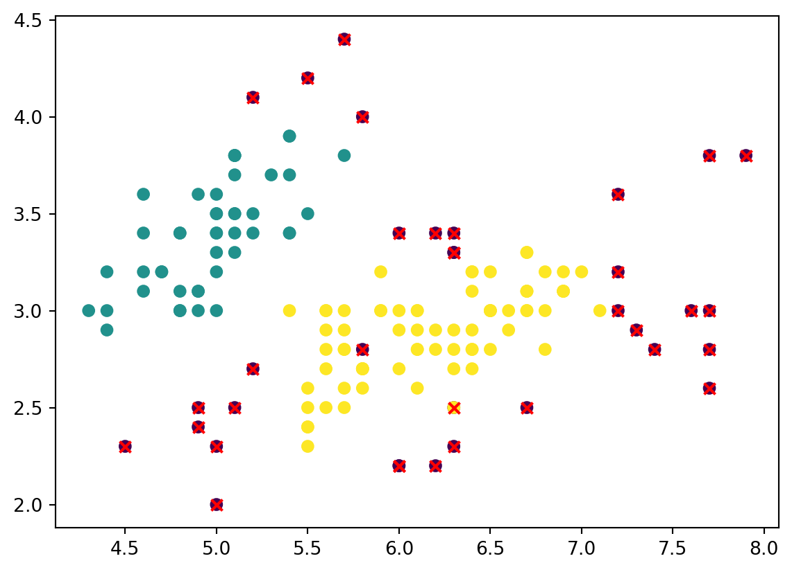

from sklearn.datasets import load_iris
# Load the iris dataset
iris = load_iris()
# The data, target, and feature names are stored in the data, target, and feature_names attributes, respectively
X = iris.data
y = iris.target
feature_names = iris.feature_namesIntroduction
Anomaly detection is the process of identifying suspicious or unusual occurrences within the dataset. These points are also called outliers and the can effect the performance of machine learning algorithms and skew results. In this blog we will implement one method of anomaly detection, Density-Based Spatial Clustering of Applications with Noise (DBSCAN). We will be using the Iris dataset from sklearn. This dataset contains 150 samples from 3 classes, 50 instances each. It contains the length and width of both sepals and petals.
This dataset is publically avaliable through the sklearn package with [documentation avaliable].(https://scikit-learn.org/stable/auto_examples/datasets/plot_iris_dataset.html)
Density-Based Spatial Clustering of Applications with Noise
DBSCAN is an unsupervised clustering machine learning model that defines a neighborhood around each data point, looks at how many points are present within that neighborhood, and then identifies regions were the density of points is higher. Outliers are identified by being points that do not have the minimum number of points in their neighborhood. By being density-based, DBSCAN is able to identify clusters of arbitrary shapes and sizes.
from sklearn.preprocessing import StandardScaler
from sklearn.cluster import DBSCAN
import numpy as np
import matplotlib.pyplot as plt
# Standardize the features
scaler = StandardScaler()
X_std = scaler.fit_transform(X)
# Create a DBSCAN object and fit the data
dbscan = DBSCAN(eps=0.5, min_samples=5)
clusters = dbscan.fit_predict(X_std)
# Get the cluster labels
# -1 = outlier
labels = dbscan.labels_
# Get the number of clusters
n_clusters = len(set(labels)) - (1 if -1 in labels else 0)
# Identify the outliers
outliers = np.where(labels == -1)[0]
# Print the number of clusters
print(f'Estimated number of clusters: {n_clusters}')
# Print the number of outliers
print("Number of outliers:", len(outliers))
# Plot the data with the outliers highlighted
plt.scatter(X[:, 0], X[:, 1], c=labels)
plt.scatter(X[outliers, 0], X[outliers, 1], c="red", marker="x")
plt.show()Estimated number of clusters: 2
Number of outliers: 34
From this plot we see that our DBSCAN model identified 2 clusters and 34 outliers. We know that this dataset contains 3 different species, so the estimated number of clusters should be 3. We can see that the first two species were, for the most part, correctly identified and the third species was listed entirely as either outliers or as past of the second species. We also see that in the first two clusters, multiple outliers were identified in the bottom right.
Performance Improvement
We can improve the performance of DBSCAN by fine-tuning the eps and min_samples parameters. eps is the maximum distance between two samples for them to be considered in the same neighborhood. A small eps value means that clusters will be closer together while a larger value means that clusters will be further apart. min_samples is the number of points in a neighborhood for a sample to be considered a cluster.
We will loop over all combinations of eps and min_sample values and attempt to find a combination that correctly identifies 3 clusters.
# List of possible eps values
eps_values = [0.3, 0.5, 0.7, 0.9]
# List of possible min_samples values
min_samples_values = [3, 5, 7, 9]
# Loop over possible eps and min_samples values
for eps in eps_values:
for min_samples in min_samples_values:
dbscan = DBSCAN(eps=eps, min_samples=min_samples)
clusters = dbscan.fit_predict(X_std)
labels = dbscan.labels_
n_clusters = len(set(labels)) - (1 if -1 in labels else 0)
n_outliers = list(labels).count(-1)
print(f'eps={eps}, min_samples={min_samples}, estimated number of clusters={n_clusters}, number of outliers={n_outliers}')eps=0.3, min_samples=3, estimated number of clusters=10, number of outliers=84
eps=0.3, min_samples=5, estimated number of clusters=3, number of outliers=120
eps=0.3, min_samples=7, estimated number of clusters=2, number of outliers=129
eps=0.3, min_samples=9, estimated number of clusters=1, number of outliers=141
eps=0.5, min_samples=3, estimated number of clusters=7, number of outliers=17
eps=0.5, min_samples=5, estimated number of clusters=2, number of outliers=34
eps=0.5, min_samples=7, estimated number of clusters=5, number of outliers=46
eps=0.5, min_samples=9, estimated number of clusters=4, number of outliers=68
eps=0.7, min_samples=3, estimated number of clusters=2, number of outliers=5
eps=0.7, min_samples=5, estimated number of clusters=2, number of outliers=6
eps=0.7, min_samples=7, estimated number of clusters=2, number of outliers=16
eps=0.7, min_samples=9, estimated number of clusters=2, number of outliers=20
eps=0.9, min_samples=3, estimated number of clusters=2, number of outliers=4
eps=0.9, min_samples=5, estimated number of clusters=2, number of outliers=4
eps=0.9, min_samples=7, estimated number of clusters=2, number of outliers=6
eps=0.9, min_samples=9, estimated number of clusters=2, number of outliers=7From this list we see that the only combination that correctly identified 3 clusters was with eps=0.3 and min_samples=5. Below is the resulting plot.
# Create a DBSCAN object and fit the data
dbscan = DBSCAN(eps=0.3, min_samples=5)
clusters = dbscan.fit_predict(X_std)
# Get the cluster labels
# -1 = outlier
labels = dbscan.labels_
# Get the number of clusters
n_clusters = len(set(labels)) - (1 if -1 in labels else 0)
# Identify the outliers
outliers = np.where(labels == -1)[0]
# Print the number of clusters
print(f'Estimated number of clusters: {n_clusters}')
# Print the number of outliers
print("Number of outliers:", len(outliers))
# Plot the data with the outliers highlighted
plt.scatter(X[:, 0], X[:, 1], c=labels)
plt.scatter(X[outliers, 0], X[outliers, 1], c="red", marker="x")
plt.title("DBSCAN Outlier Detection")
plt.suptitle("eps=0.3, min_samples=5", y=0.92)
plt.show()Estimated number of clusters: 3
Number of outliers: 120Even though the model correctly identified that there are 3 clusters, we can see from the plot that the clusters are not correct. The number of outliers also increased from 34 to 120.
From the list we see that the model with the least number of outliers was with eps=0.9 and min_samples=3 or min_samples=5. Both models tied for only 4 outliers and identified 2 clusters. Below is is both plots.
Create a figure and a set of subplots
fig, axs = plt.subplots(1, 2, figsize=(10, 5))
Create a DBSCAN object for min_samples=3 and fit the data
dbscan1 = DBSCAN(eps=0.9, min_samples=3) clusters1 = dbscan1.fit_predict(X_std)
Get the cluster labels and identify the outliers
labels1 = dbscan1.labels_ outliers1 = np.where(labels1 == -1)[0]
Create a DBSCAN object for min_samples=5 and fit the data
dbscan2 = DBSCAN(eps=0.9, min_samples=5) clusters2 = dbscan2.fit_predict(X_std)
Get the cluster labels and identify the outliers
labels2 = dbscan2.labels_ outliers2 = np.where(labels2 == -1)[0]
Plot the data with the outliers highlighted on the first subplot
axs[0].scatter(X[:, 0], X[:, 1], c=labels1) axs[0].scatter(X[outliers1, 0], X[outliers1, 1], c=“red”, marker=“x”) axs[0].set_title(“DBSCAN Outlier Detection (min_samples=3)”) # Plot the data with the outliers highlighted on the second subplot axs[1].scatter(X[:, 0], X[:, 1], c=labels2) axs[1].scatter(X[outliers2, 0], X[outliers2, 1], c=“red”, marker=“x”) axs[1].set_title(“DBSCAN Outlier Detection (min_samples=5)”) plt.show() ```
In both of these plots the model only estimated 2 clusters, however, these clusters look much closer to what we expect than in the previous plots. The number of outliers are also significantly lower than in all previous models. The outliers identified appear to belong to what should be the third cluster, and all other points from that cluster are included in the second cluster.
DBSCAN is not perfect and requires tuning the hyper-parameters for best results, however, it is a useful visualization method for identifying anomalies.
References:
- https://scikit-learn.org/stable/auto_examples/datasets/plot_iris_dataset.html
- https://pieriantraining.com/dbscan-for-outlier-detection-in-python-and-scikit-learn-machine-learning-in-python/
- https://www.geeksforgeeks.org/detect-and-remove-the-outliers-using-python/
- https://www.kdnuggets.com/2020/04/dbscan-clustering-algorithm-machine-learning.html#:~:text=low%20point%20density.-,Density%2DBased%20Spatial%20Clustering%20of%20Applications%20with%20Noise%20(DBSCAN),is%20containing%20noise%20and%20outliers.